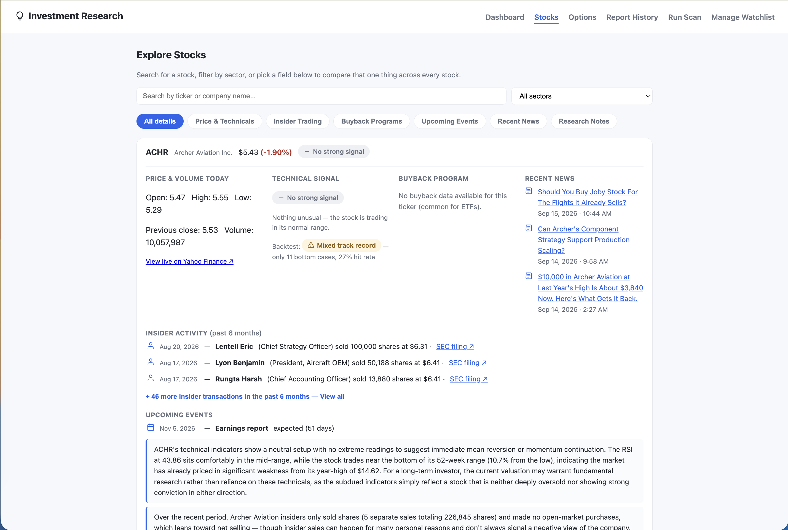
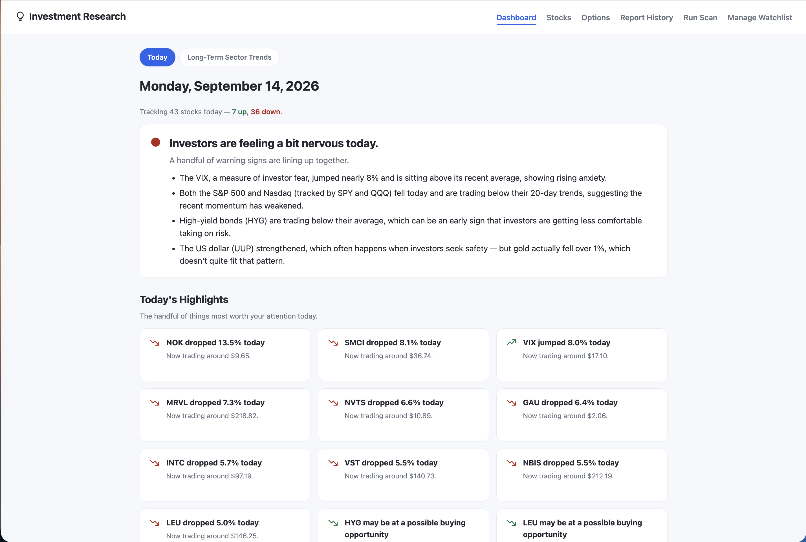
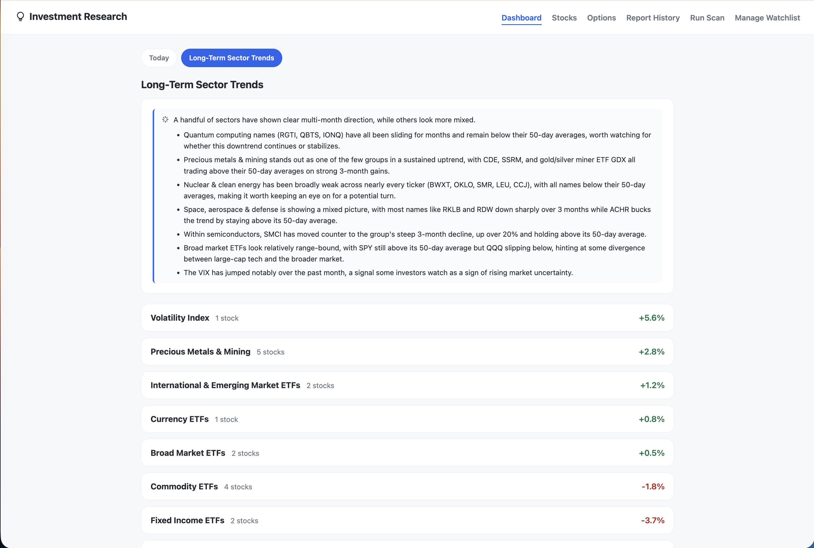
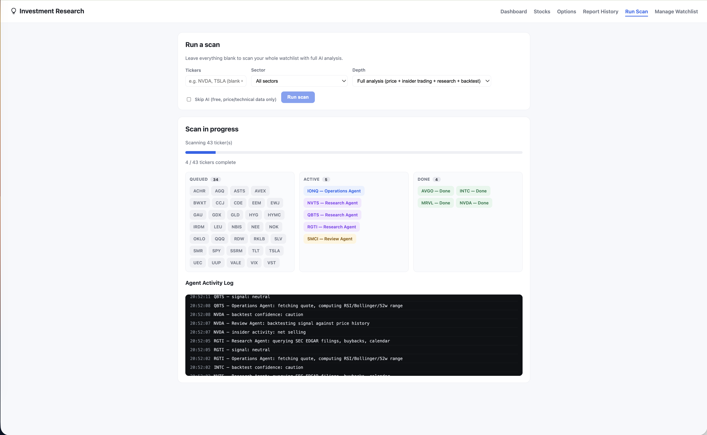
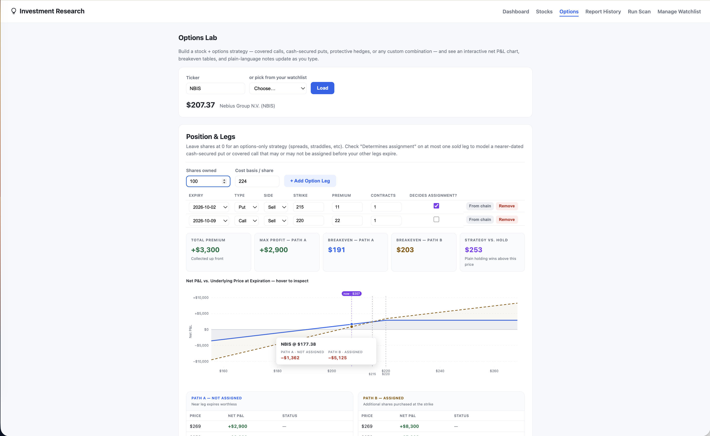
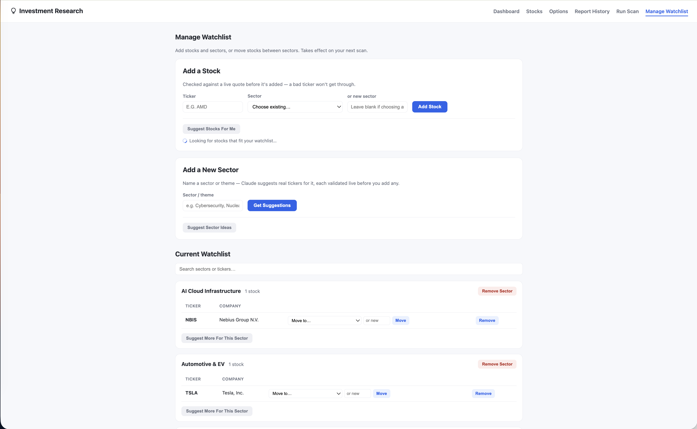

Multiagent AI Investment Research Platform
Built a multiagent AI platform that automates investment research across sector based equity watchlists. The project combines LLM reasoning and summarization with financial data pipelines, quantitative indicators, and historical backtesting to connect company developments, price behavior, and market conditions.
Designed a hierarchical orchestration workflow in Python using the Claude API. Specialized agents analyze technical signals, corporate activity, market sentiment, and historical evidence, while a portfolio manager agent consolidates their findings into an executive summary. Ticker research runs concurrently through a thread pool, with explicit dependencies between stages, including passing technical signals into the review agent for assessment.
The AI architecture includes:
The financial pipeline evaluates RSI, Bollinger Bands, moving averages, and 52 week price positioning alongside insider transactions, share repurchase spending, earnings events, and news. Cross asset indicators provide context on market risk appetite, while historical signal backtests report hit rates and sample sizes to support evidence based interpretation.
Built a Flask dashboard with automated daily scans, sector comparisons, research history, and watchlist management. An interactive options lab integrates live options chains with configurable stock and option positions, visualizing expiration profit and loss, breakeven points, and the tradeoffs between premium income, downside protection, and capped upside.
← Back to Portfolio




